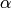

Monte-Carlo sampling from Salpeter SMF¶
Drawing samples from a given probability distribution is a very common task. We would like to draw samples from the likelihood distribution of the fit parameters.
In our case, we want to simulate data of stellar mass measurements.
Monte-Carlo methods can sample from any given probability distribution. The general outline of a Monte-Carlo algorithm is to first draw some candidate values from some proposal distribution and second to accept or reject this candidate randomly given the probability distribution.
There are numerous different versions of Monte-Carlo methods. See chapter 29 in MacKay’s ITILA for a nice overview.
Let us implement a Python function that draws Monte-Carlo samples from a Salpeter SMF, given a value of  and a mass interval:
import numpy,math
import matplotlib.pyplot as plt
import random as random
random.seed(1) # set random seed.
def sampleFromSalpeter(N, alpha, M_min, M_max):
# Convert limits from M to logM.
log_M_Min = math.log(M_min)
log_M_Max = math.log(M_max)
# Since Salpeter SMF decays, maximum likelihood occurs at M_min
maxlik = math.pow(M_min, 1.0 - alpha)
# Prepare array for output masses.
Masses = []
# Fill in array.
while (len(Masses) < N):
# Draw candidate from logM interval.
logM = random.uniform(log_M_Min,log_M_Max)
M = math.exp(logM)
# Compute likelihood of candidate from Salpeter SMF.
likelihood = math.pow(M, 1.0 - alpha)
# Accept randomly.
u = random.uniform(0.0,maxlik)
if (u < likelihood):
Masses.append(M)
return Masses
Note that this implementation draws its candidates from a uniform distribution over instead of  . This is computationally much more efficient, which is due to the mathematical form of the Salpeter SMF that decays quickly with increasing mass.
. This is computationally much more efficient, which is due to the mathematical form of the Salpeter SMF that decays quickly with increasing mass.
Let us draw a million stellar masses and check the outcome:
# Draw samples.
Masses = sampleFromSalpeter(1000000, 2.35, 1.0, 100.0)
# Convert to logM.
LogMasses = numpy.log(numpy.array(Masses))
# Plot distribution.
plt.figure(1)
plt.hist(LogMasses, 30, histtype='step', lw=3, log=True, range=(0.0,math.log(100.0)))
# Overplot with Salpeter SMF.
X = []
Y = []
for n in range(101):
logM = math.log(100.0)*float(n)/100.0
x = math.exp(logM)
y = 2.0e5*math.pow(x, 1.0-2.35) # take care of normalisation later
X.append(logM)
Y.append(y)
plt.plot(X, Y, '-', lw=3, color='black')
plt.xlim(0.0,math.log(100.0))
plt.xlabel(r'$\log M$', fontsize=24)
plt.ylabel('PDF', fontsize=24)
plt.savefig('example-Monte-Carlo-sampling-from-Salpeter.png')
plt.show()
The resulting distribution looks like this (in log-log space, a power-law is a straight line):